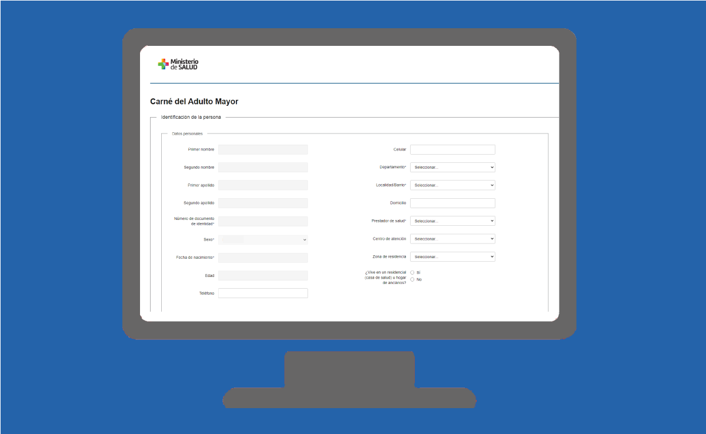

Sistemas de Registro Corporativo
Descripción
-
Este sistema es una conjunción de módulos que son denominados el core de los sistemas
del Ministerio, dado que centralizan información y servicios que permiten interoperar
entre los sistemas internos y externos al MSP de manera segura.
Los principales módulos son los siguientes
- Personas: Centraliza y evita duplicar en cada sistemas información de personas, contando con una única base que está conectada con DNIC para la validez de las mismas.
- Direcciones: Servicio que permite centralizar todas las direcciones que se utilizan en las diferentes aplicaciones conectadas. Además cuenta con un módulo específico para la georefenciacion utilizando los servicios de la IDE y el correo
- Instituciones:Al igual que las personas evita duplicar las mismas en cada sistema contando con una única base de Instituciones que interactúan con el Ministerio.
- Novedades: Modulo que recibe y distribuye información entre sistemas, tanto internos como externos de manera ágil y segura. Por ejemplo en él se recibe datos externos y se distribuye a los sistemas interesados, información de los resultados de test de laboratorios, de HCEN referente a Plan Nacional de Coronavirus. Por otro lado se envía desde MSP datos de defunción para DGREC y BPS entre otros.
- Gestión de Archivos: Realiza una mejor gestión de los sistemas en lo que corresponde a obtener listados de datos que por la temática y volumen podrían degradar la estabilidad del sistema que se está usando.
- Plataforma de Interoperabilidad del MSP (PIM): es un conector que centraliza todos los servicios y medios de comunicación entre los sistemas a la interna y para servicios externos a MSP es el punto de ingreso a los mismos. En él se configuran los niveles de seguridad necesarios. Permite una adecuada trazabilidad de la interoperabilidad como gestión de la misma
Información que aporta
Personas: Datos patronímicos de las personas que están validada por DNIC.
Direcciones: Datos de dirección de personas e instituciones.
Instituciones: Datos de instituciones de cualquier tipo (Establecimientos, funerarias, clínicas, etc.) que interactúen con sistemas del Ministerio
Novedades, Gestión de Archivos y Plataforma de Interoperabilidad del MSP no contienen información funcional propia, son conectores que permiten una distribución más eficiente y segura del pasaje de datos entre los sistemas, pero el dato corresponde al sistema fuente original.Incluido en plataforma de BI
Personas, Direcciones e Instituciones están incluidas en la plataforma como tablas maestras o codigueras.
Base Completa / Vigencia
Producción desde enero 2015
Unidad Dueña del Dato
DiGESE/AGE
Enlace servicio en línea